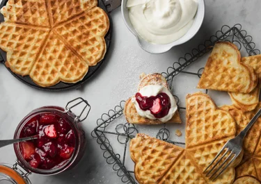

Våfflor

Beskrivning
Gott recept för tunna och krispiga våfflor.
Perfekt för trötta söndagsmorgonar.
Ingredienser
- 100 g smör
- 4 dl mjöl
- 2 ägg
- 3 dl mjölk
- 2 tsk bakpulver
Instruktioner
- Smält smör i en kastrull
- Vispa ihop ägg och mjölk i en bunke.
- Skikta långsamt i mjöl under rörning och tillsätt bakpulver.
- Tillsätt smöret.
- Grädda våfflorna i ett våffeljärn.